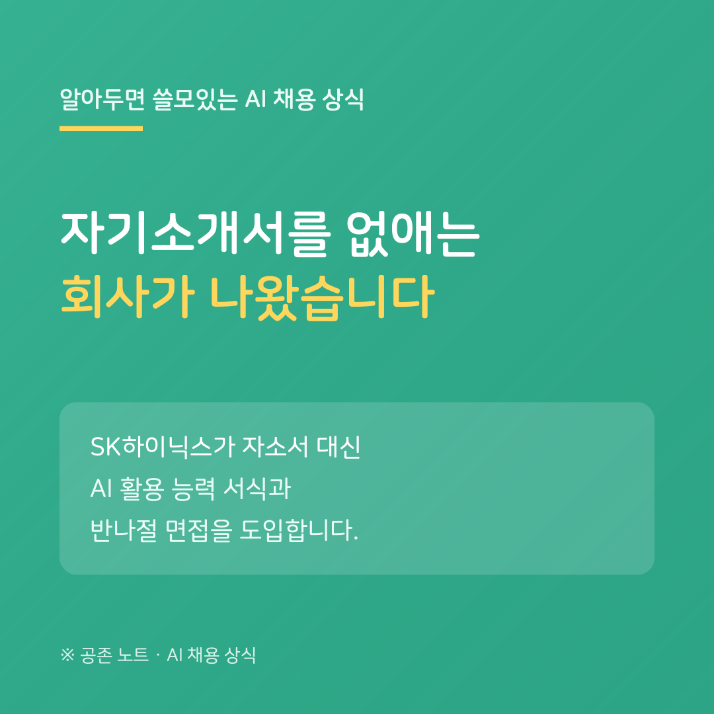

SK하이닉스가 지난주 신입 채용 개편안을 발표했습니다. 자기소개서를 없애고, AI 활용 능력과 직무 전문성을 적는 새 서식으로 바꿉니다. 8월 20일 접수를 시작하는 수시채용(설계·소자·R&D공정·양산기술 직무)부터 적용됩니다.
면접도 달라집니다. 기존 20~30분 면접 대신, 과제 수행과 인터뷰를 함께 하는 '반나절 인터뷰'로 실무 역량을 봅니다. 4분기에는 AI 해커톤을 열어, 우수 참가자에게는 서류 없이 바로 면접 기회를 준다고 합니다.
회사가 밝힌 취지는 '스펙과 서류 중심 평가에서 벗어나 실전 역량을 보겠다'는 것입니다. 여기에 배경 하나를 겹쳐 볼 수 있습니다. 제출되는 자소서의 64.4%가 생성형 AI로 작성된 것으로 추정된다는 업계 리포트가 나오는 시대입니다. 모두가 AI로 쓰는 서류는 사람을 가려내는 힘을 잃어갑니다.
구직자에게 의미는 두 가지입니다. 하나, '자소서 잘 쓰는 기술'의 자리가 줄고 'AI를 실제로 다루는 능력'이 그 자리를 채우고 있습니다. 둘, 이런 개편은 한 회사로 끝나지 않는 경우가 많습니다. 지원할 회사의 전형을 예년 공고로 짐작하지 말고, 이번 시즌 공고를 다시 확인하세요.
---
※ SK하이닉스 개편 내용은 2026년 7월 30일 언론 보도 기준이며, 세부 전형은 공식 공고를 확인하세요. 자소서 AI 작성 비율은 AI 채용 솔루션 업체 발표 리포트에 근거한 추정치입니다.
공존 노트 · AI가 당신을 평가하는 시대, 구직자를 위한 안내서